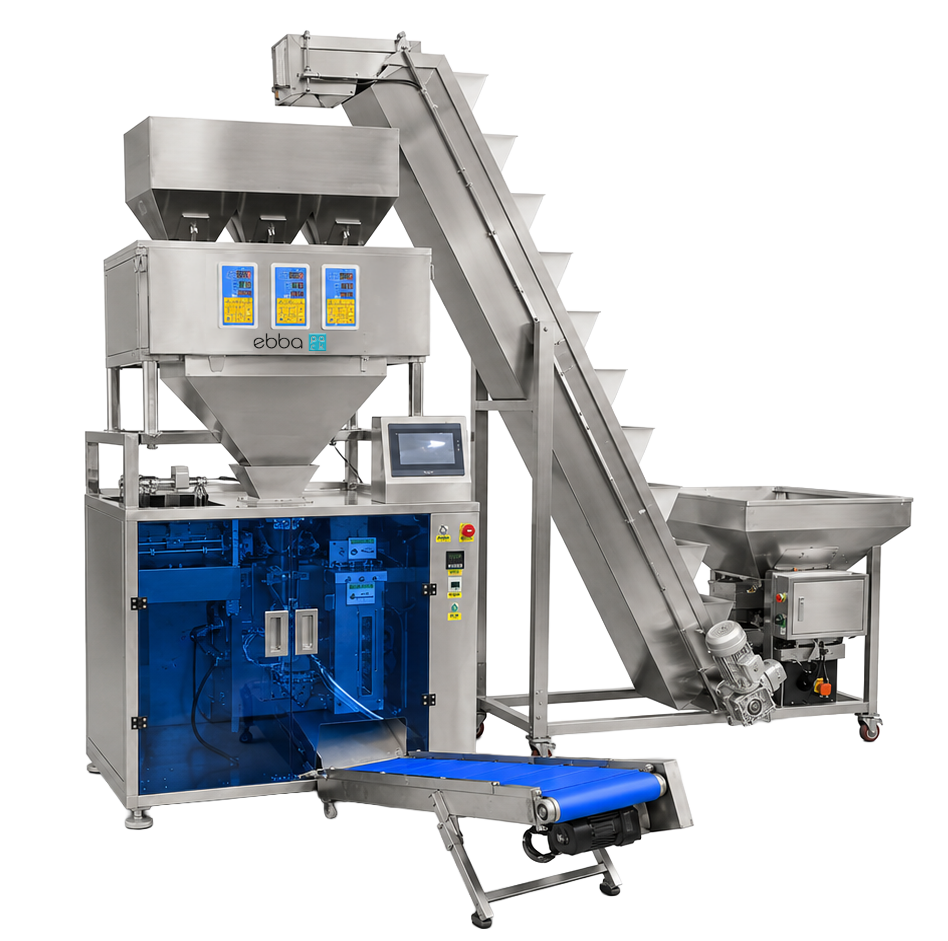

Indicada para produtos sólidos e granulados.
Envase automático para embalagens pré-formadas
Envase inteligente para pouches prontos.
Automatize a dosagem, o envase e a selagem de embalagens pouch em diferentes tamanhos e formatos, com configuração para pós, grãos, líquidos e pastosos.
PósGrãosLíquidosPastososPouches prontos
Fale com a Ebba Pack
1 linhadosagem + envase + selagem
4 perfispós, grãos, líquidos e pastosos
Projetoconfigurado para a sua meta
Configuração técnica sob medida

Aplicações atendidas.
A escolha do dosador e do sistema de alimentação depende das características do produto.
Pós
Café em pó, temperos, sal, açúcar, condimentos, farinhas e misturas.
Grãos e granulados
Sementes, grãos, pet food, snacks, castanhas e café em grãos.
Líquidos
Água, sucos, leite, óleos, vinagre, molhos líquidos e produtos compatíveis.
Pastosos
Mel, cremes, molhos densos, pastas, condimentos e produtos viscosos.

Envasadora para Pós30g a 300g

Envasadora para Grãos 10g a 999g

Envasadora para Líquidos30ml a 300ml

Envasadora para Molhos e Pastosos30ml a 300ml
Uma máquina, várias possibilidades de envase.
A solução Ebba Pack foi pensada para empresas que utilizam embalagens prontas e querem melhorar padronização, controle e produtividade no processo de envase.
01
Embalagem prontaTrabalha com pouches pré-formados, como stand-up pouch, doypack, zipper, fundo chato e outros formatos compatíveis.
02
Alimentação adequadaPermite configuração com esteira de elevação, rosca transportadora ou tanque, conforme característica do produto.
03
Processo padronizadoIntegra alimentação, dosagem, envase e selagem para reduzir variações e tornar a operação mais organizada.
Vantagens para sua linha.
Cada projeto é configurado conforme produto, faixa de peso ou volume, embalagem e meta de produção.
✓
Mais padronização
Melhor repetibilidade no envase e na apresentação final.
Melhor repetibilidade no envase e na apresentação final.
✓
Menos retrabalho
Redução de perdas operacionais e falhas comuns do processo manual.
Redução de perdas operacionais e falhas comuns do processo manual.
✓
Mais flexibilidade
Configuração para diferentes produtos, tamanhos e formatos de pouch.
Configuração para diferentes produtos, tamanhos e formatos de pouch.
✓
Operação mais organizada
Fluxo mais limpo, fácil de treinar e pronto para crescer com controle.
Fluxo mais limpo, fácil de treinar e pronto para crescer com controle.
Configurações e diferenciais.
A solução Ebba Pack pode ser configurada conforme tipo de produto, formato da embalagem e nível de automação desejado.
✓
Alta versatilidade para diferentes segmentos e formatos de pouch.
✓
Dosagem configurada conforme o produto e a meta de produção.
✓
Melhor padronização no envase e redução de desperdícios.
✓
Integração com acessórios periféricos e opções de saída.
Sistemas de alimentação e dosagem
Indicada para pós e produtos finos.
Indicado para líquidos e produtos pastosos.
Opções de saída
Quer automatizar o envase do seu produto?
Envie as informações de produto, embalagem, peso ou volume desejado e meta de produção. A Ebba Pack avalia a configuração ideal para sua operação.